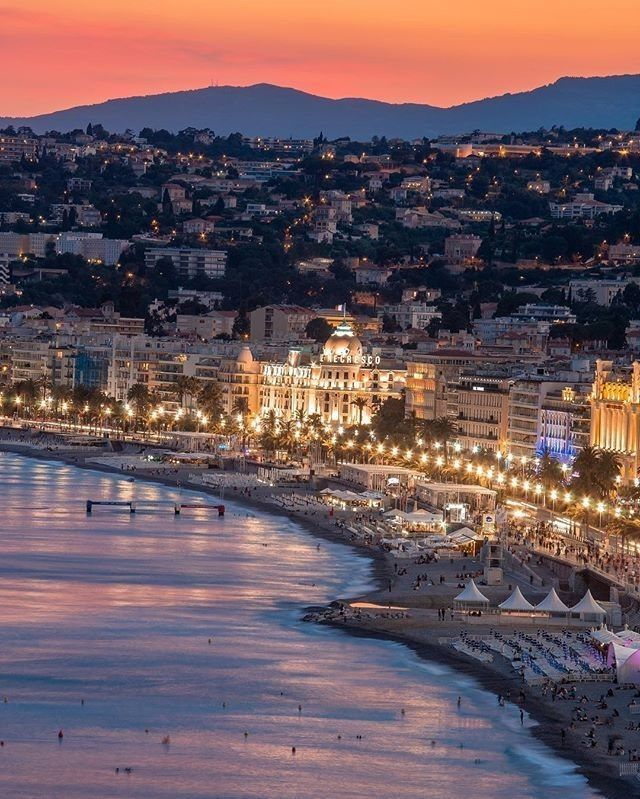
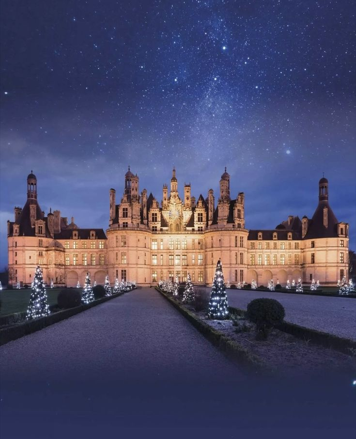

Fransa Turizm

Paris, dünyanın en çok ziyaret edilen şehirlerinden biridir.Paris, dünya çapında turizm ve kültürün merkezi olarak, dünyanın en çok ziyaret edilen şehirlerinden biridir. Tarihi yapıları, müzeleri ve ikonik simgeleriyle her yıl milyonlarca turist çeker. Eyfel Kulesi’nin panoramik manzaraları, Louvre’un sanat hazineleri ve Seine Nehri boyunca yapılan keyifli yürüyüşler, şehri sadece görsel olarak değil, deneyim açısından da unutulmaz kılar. Ayrıca Paris’in kafeleri, sokakları ve pazarları, şehrin günlük yaşamını ve kültürel zenginliğini yakından hissetme imkânı sunar. Bu çeşitlilik, Paris’i hem tarih hem de modern yaşamla iç içe keşfedilebilecek bir destinasyon hâline getirir.

Nice ve Cannes sahilleri yaz turizmi için idealdir.Nice ve Cannes sahilleri, yaz turizmi için idealdir ve Akdeniz’in masmavi suları ile altın rengi kumsallarıyla ziyaretçilerini cezbeder. Güneşlenmek, denize girmek veya su sporları yapmak isteyenler için mükemmel ortam sunan bu sahiller, aynı zamanda sahil boyunca sıralanan kafeler, restoranlar ve butiklerle keyifli bir sosyal deneyim de sağlar. Cannes Film Festivali gibi kültürel etkinlikler, bölgeyi sadece doğal güzellikleriyle değil, aynı zamanda sanatsal ve sosyal yaşamıyla da öne çıkarır. Sahil yürüyüşleri, gün batımı manzaraları ve canlı atmosferi ile Nice ve Cannes, yaz tatillerinde unutulmaz anılar biriktirmek için ideal destinasyonlardır.

Loire Vadisi tarihi şatolarıyla ünlüdür.Loire Vadisi, tarihi şatolarıyla ünlü bir bölgedir ve Fransa’nın kültürel mirasını keşfetmek isteyenler için eşsiz bir destinasyondur. Vadideki şatolar, Orta Çağ’dan Rönesans’a kadar farklı dönemlerin mimari özelliklerini yansıtır. Chambord, Chenonceau ve Amboise gibi ünlü yapılar, zarif taş işçiliği, geniş bahçeleri ve ihtişamlı iç dekorasyonlarıyla ziyaretçileri büyüler. Loire Nehri boyunca yapılan turlar ve bisiklet yolları, şatoları doğayla iç içe keşfetmeye olanak sağlar. Bölge, sadece tarih meraklıları için değil, fotoğraf ve doğa tutkunları için de unutulmaz bir deneyim sunar